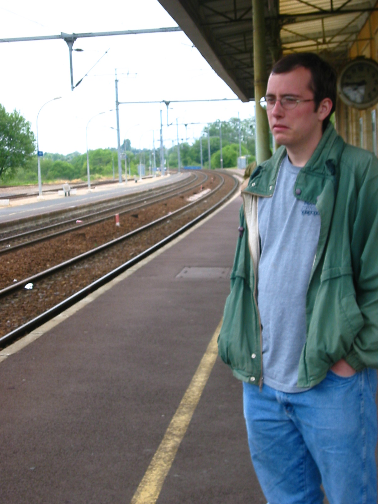

My repertoire of traveling disaster stories is limited. In large part, I’ve been lucky, and I’m also a careful planner. I try to bake resiliency into my itineraries and I’ve looked at alternatives. I’m a careful planner now because of what is known in my family as “The France Story,” a multi-day story of cascading failure driven by a series of bad decisions and poor planning, all on my part.
Thursday, May 15, 2003
I spent the spring of 2003 studying abroad at Friedrich-Wilhelms-Universität in Bonn, Germany. This was a three-month program, and I was a little over six weeks in at this point. I had a Eurail Pass, good for unlimited travel over a two-month period, and I’d been making good use of it, covering about 3,500 miles. Almost all of it was second class without a seat reservation. When I overnighted away from Bonn, I stayed in youth hostels. Reservations were cheap, €5-10 euro/night, plus (often) a deposit for the bed linen.
During the trip in Germany I hung out a lot with Mike Riley, also from Kalamazoo College. We’d made some trips together, including one the previous week up to Arnhem to see the John Frost Bridge, site of the abortive Operation Market Garden during World War II. Going into the weekend we didn’t have class on Friday, so we hatched a plan to visit Normandy, staging out of Paris. I’d found a hotel in Paris for €18/night, which was quite a deal.
We spent the morning touring Büchel Air Base and headed out from Bonn around 4:30 in the afternoon. Then, as now, you get to Paris from Bonn by taking a regional train from Bonn to Cologne, and then an express from Cologne to Paris. In 2003 this was called “Thalys”; it’s part of the Eurostar brand now. Pass holders like me had to pay a surcharge; I think it was €20 and I was annoyed at the time. On the Thalys Mike and I sat across from a retired English railway engineer named Pickett, and had a lively conversation with him as far as Brussels, where he got off. He was wonderful to talk to, regaled us with stories of trains through the ages. He also said something rather prophetic: “All it takes is one little cock-up when traveling, and everything gets bent out of shape.”
We arrived in Paris a bit after 9 PM. Our hotel was the Comfort Inn Bezons La Défense, which is a Kyriad now. It was at 86 Av. Gabriel Péri in the Bezons commune, across the Seine from La Défense. The transit geography in that part of Paris has changed since I was there. The T2 tram line was extended from La Défense to Bezons in 2012. Line J of the Transilien network began running in 2004. In 2003, you took either Line 1 of the Metro or the RER out to La Défense, then the 272 bus to the hotel. We figured on going to bed relatively early, so as to be up and moving around 7 and leaving Paris no later than 9. Our destination: the invasion beaches and American Military Cemetery in Normandy.
Friday, May 16, 2003
We misjudged how tired we were and didn’t leave the hotel until 10 AM. No biggie, we figured, still plenty of time. However, Paris has numerous major train stations, and we accidentally went to the Gare du Lyon (trains to the southeast) instead of the Gare Saint-Lazare. By the time we straightened all of this out it was getting on near noon. We hopped the next train to Normandy (Caen - Bayeux - Cherbourg) leaving around 12:30 PM. We would be in Caen by 2:30 PM, and the last train back to Paris didn’t leave until 9:30 in the evening. Seven hours. Plenty of time.
The train was extremely crowded, and we sat on the floor the entire way there. Arriving in Caen, we consulted the bus schedule and found that we really needed to be in Bayeux, another stop down the tracks. So we caught a commuter train to Bayeux, arriving at 3:00. Here’s where things began to take an ugly turn. Consulting the bus schedule, we discovered that the bus we needed didn’t run again until 4:30. That was unacceptable. Now, we gamely figured that the beaches could be no more than five or six kilometers to the north, so we decided to walk it.
This was a somewhat brave decision, given that we possessed neither a compass, nor a map, nor a GPS. This was 2003; our flip cell phones could provide no guidance. Also, it was more like 9 kilometers to Port-en-Bessin, and fifteen to Colleville-sur-Mer.
An hour and a half later, after walking through farmer’s fields and along cart-tracks (we may have taken the La Fée d’Argouges), we found ourselves at a stop for the bus we didn’t feel like waiting for. At least we’d managed to bear north. So we waited for the bus, and rode it to Colleville-sur-Mer, a village on the English Channel and the home of the cemetery. A light drizzle had begun in the meantime. Alighting from the bus, we found that we’d been dropped over a kilometer from the cemetery. Walking was nothing new at this point, so we headed off, and found ourselves outside the cemetery at approximately 5:20 PM.
We arrived at the gates and found the cemetery closed. We were under the impression that it was open until 7 PM, and that had been indeed been true in 2002. However, the American government wasn’t willing to pay overtime when the France shortened the work week to 35 hours, so the open hours were shortened. It was now raining rather steadily, and we were not in the best of moods. We decided to bag it and take a bus back to Bayeux. We found the bus stop, and discovered that the last bus had departed some fifteen minutes ago. After all, the cemetery closes at 5. We were stranded in Colleville-sur-Mer, and it was really raining now.
We attempted to hitchhike, without success. I wouldn’t have picked us up either. Finally, we came upon a hotel and called a taxi. While we waited, we consumed a pint of Guinness. This was the high point of the day. The taxi arrived around 6:20 and delivered us to Bayeux, setting us back €30 in the process. We patiently waited at Bayeux for the next train back to Paris, catching it at 7:30 PM. Given the two-hour transit time, we had a reasonable expectation of being in Paris by 9:30. That would be enough time to catch the RER to La Défense and from there the 272 bus to the hotel. The last bus was due to depart at 10:06. We knew we could make it.

The train broke down between Bayeux and Paris. On top of that several of the bathrooms were backed up. I discovered at this point that I had left my Eurail pass back in the hotel room in Paris (I was using it as a bookmark); I feigned sleep the rest of the way to Paris and wasn’t troubled by the conductor. We were two hours late. Somewhere, I probably still have the voucher from SNCF. We had missed the last bus and were facing a walk back to the hotel (estimated at an hour or so) in the rain. We were game to try it, if only to save money. Consulting a map kiosk at La Défense, we headed off in what we believed to be the right direction. This would have been 11:45 PM or so. At a quarter past midnight we looked up to see the magnificence of the Arc de Triomph and the Eiffel Tower and realized we’d gone the wrong way. We had intended to head west, not southeast.
Consulting the map again, I made the baleful discovery that it was oriented with north facing towards the bottom right. We made it back to La Défense a little before one in the morning, very annoyed, and very wet. After a half hour of adventures in various subterranean roadways we made it onto the main street. We gave in and hailed a cab, parting with another €10. Fittingly, our driver was relatively new to Paris, hadn’t heard of our hotel, and no more spoke English than we spoke French. He did have a guidebook, and we made it work. We arrived at the hotel at about 1:45 AM to find the door locked. Thankfully, there was a buzzer to notify the fellow at the night desk, and we did not have to sleep in the rain that night.
Saturday, May 17, 2003
In the morning we got an early start, determined to leave France as quickly as possible. Parting with another €20 each, we boarded the Thalys and returned to Cologne, then caught a local to Bonn. When we arrived home we went to a barbecue on the Rhine, and the story fades to black…
Reflections
During and immediately after the trip I was beside myself with anger, and blamed France. Time and space helped me understand that everything that went wrong, except the breakdown between Bayeux and Paris, came down to poor planning on my part.
The first issue is that I didn’t know what the actual operating hours of the American Military Cemetery were. As of writing, they’re 9 AM-5:45 PM. That’s the crucial information for building the rest of the trip around. You figure out where and when you’re going and you work backward. Even now, getting from Bezons to Caen, let alone Bayeux, is really a three-hour trip, and the train services aren’t frequent.
My memory is vague, but I think I lighted on staying in Paris because I couldn’t find cheap places to stay on short notice in Normandy itself. Be that as it may, building a 5-6 hour+ daily round-trip into the schedule creates severe operational constraints that weren’t obvious at that time. Rouen or Évreux, both much closer to Normandy, might have been good alternatives. We were college students. We might always find money for beer, but money was tight.
The second issue is that I didn’t really have a plan for getting to the Normandy beaches themselves. Any student of the landings knows that Bayeux and Caen aren’t on the coast. Our initial point of arrival, Caen, wasn’t close to where we wanted to be. Bus service from Bayeux to Colleville-sur-Mer is limited (even now it doesn’t show up in Google’s trip planner). If we’d stayed in Normandy itself, bicycle rental might have been an option. A week and a half later I made good use of a bicycle on a trip to Belgium (Ypres and Brugge).
These days I tend to over-plan, informed by this experience. Also, American travel networks are far less resilient than their European counterparts, so knowing your options ahead of time is essential. If you’re going some place where the train runs once per day you really don’t want to miss it.